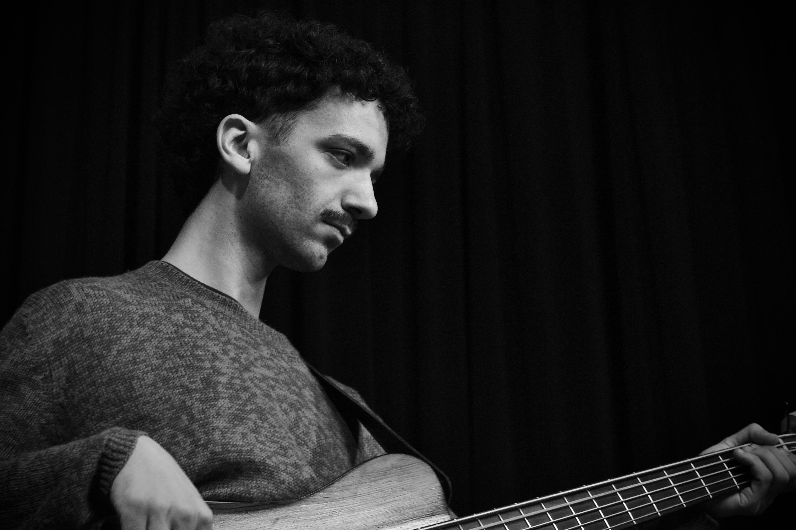

Meet The Band
MARCOLLECTIVE
Marco Baciu
Guitar · Romania
Marco Baciu is a Romanian jazz guitarist aiming to introduce audiences to a fresh sound rooted in the deep musical traditions of Transylvania. By combining rich jazz harmonies with steady hip-hop grooves and the distinctive melodic lines of Romanian folk, Marco is shaping a new wave of music that offers listeners something both innovative and deeply relatable.
Dan Smit
Piano · Netherlands
Dan Smit is a Dutch jazz pianist and composer whose energetic, genre-bending style drives Marcollective's fusion of jazz, hip-hop, and Balkan rhythms. His music—fresh, virtuosic, and rooted in improvisation—keeps jazz vibrant and authentic amid today's shifting musical landscape.

Giuseppe Gallitelli
Drums · Italy
Giuseppe Gallitelli is an Italian drummer who blends jazz complexity with the steady groove of hip-hop. As the pioneering soul of the band, his deep pocket, dynamic control, and rhythmic virtuosity drive the group's sound. Giuseppe is dedicated to creating music that moves people—both physically and emotionally—channeling energy, feel, and precision into every performance.

Valerio Ruperto
Bass · Italy
Valerio Ruperto is the Italian bassist of Marcollective, contributing his versatility to the band's mix of jazz, hip-hop grooves, and Transylvanian influences. He is known for adapting many styles, while keeping his own clear musical identity. His improvisation is shaped by guitarists such as Pat Metheny, Kurt Rosenwinkel, and John Scofield, and his early interest in jazz was influenced by Bill Evans and Wayne Shorter.